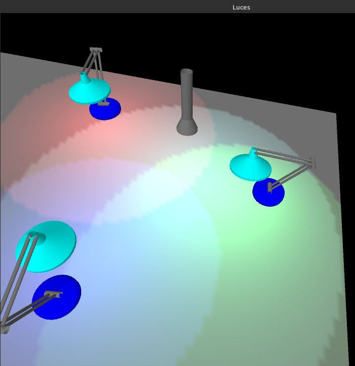

Luces
Modelos de iluminación
Un modelo de iluminación, también llamado modelo de alumbrado, se utiliza para calcular la intensidad de la luz que percibimos desde un punto determinado en la superficie de un objeto. Un algoritmo de presentación de superficies emplea los cálculos de la intensidad a partir de un modelo de iluminación para determinar la intensidad de la luz para todas posiciones de pixel que se proyectan para las diversas superficies en una escena. Se puede efectuar la presentación de superficies al aplicar el modelo de iluminación en todos los puntos de la superficie visible o mediante la interpolación de las intensidades a lo largo de las superficies con base en un conjunto reducido de cálculos del modelo de iluminación.
El modelado de los colores y efectos de iluminación que se ven en un objeto
Atenuacion de la luz
Código server node jsLuz ambiente y atenuacion de la luz
Código server node jsLuz ambiente - direccional
Código demo server node jsLuz niebla
Código server node jscombinacion de modelos de luces 2
Código server node jsNormal mapping
Código server node jsshadow mapping
Código server node js8 light - nub
Demo en processing
Pix Light
Demo en processing